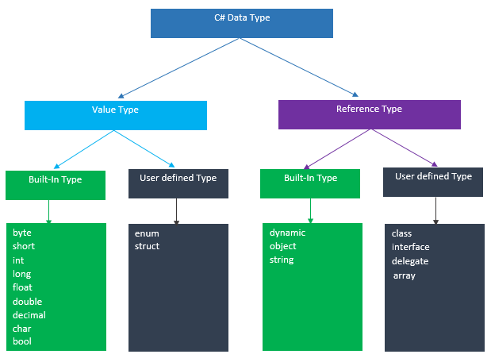

## Unit 2 Kickoff! </br> #### Key topics for tonight <div style="text-align: left;"> - A little about me </br> - High level overview of Unit 2 </br> - Data Types, Type Conversion, Strings, Arrays, Objects </div> --- ## Hi, I'm Ryan Shaw! <div style="text-align: left;"> I'll be the lecturer for the C# group for Unit 2! Please feel free to reach out to me via slack with any questions as we go through the course! </br> </br> Various different interests: <ul style="columns: 2;"> <li>Programming (Go figure)</li> <li>Percussion</li> <li>Competitive gaming</li> <li>Rollerblading</li> </ul> </div> --- ## Hi, I'm Ryan! (cont.) Why do Java developers need glasses? <p class="fragment" style="margin-left: 2rem; color: cadetblue;"> Because they can't C#! </p> --- ## What to expect for Unit 2 <p style="text-align: left;"> - Lectures & studios Monday / Thursday 6 - 9 </br> - Experimental: Supplemental weekly sessions, Fridays from 6 - 7 pm </br> </p> --- ## What to expect for Unit 2 (cont) #### Upcoming deadlines <p style="text-align: left;"> - Assignment 1 is due September 30th! </p> --- ## Data Types - Static vs. Dynamic #### Javascript ```javascript let name = "Ryan"; // This is okay! name = 12345; // This is also okay! ``` #### C# ```C# string name = "Ryan"; // This is okay! name = 12345; // ERROR! - Can't convert int to string! ``` <p class="fragment" style="text-align: left;"> Once a variable is assigned a data type in C#, it remains that data type for the rest of the variable's life. </p> <p class="fragment" style="color: cadetblue;"> demo </p> --- ## Data Types - Built in Types #### Primatives <p style="text-align: left;"> - fundamental data type </br> - Can't be broken down further </p> ```C# short, int, long // integer numbers (whole numbers) float, double, decimal // Real Numbers (with decimal points) char // A single character (ex. 'a', '!', '@') bool // true / false value ``` #### Non-primitives <p style="text-align: left;"> - Built utilizing primatives as building blocks </p> ```C# array // A collection of items of the same data type // (ex. int[], bool[], object[]) string // A built in type which represents an array of char object // Supports all classes (will revisit this in future chapters!) ``` --- ## Reference and Value Types #### Value Type Variables <p style="text-align: left;"> - Directly contains the data </br> - Primitive built-in types are all value types </p> #### Reference Type Variables <p style="text-align: left;"> - References a spot in memory containing the data </br> - With reference types, two variables can reference the same object </p> --- ## Reference and Value Types (cont.)  --- ## Data Types - Concept check! <p style="text-align: left;"> - What's the difference between static and dynamic typing? </br> - When might we use a `long` instead of an `int`? </br> - What are the key differences between a value type and a reference type? </p> --- ## Type Conversion - Implicit #### Implicit Conversion <p style="text-align: left;"> - No special syntax needed </br> - Is only possible on conversions that don't risk data loss </p> ```c# // Implicit conversion. A long can // hold any value an int can hold, and more! int num = 2147483647; long bigNum = num; ``` --- ## Type Conversion - Explicit #### Explicit Conversion <p style="text-align: left;"> - Is used when data loss is possible through the conversion </p> ```c# double x = 1234.7; int a; // Cast double to int. a = (int)x; Console.WriteLine(a); // Output: 1234 ``` --- ## Type Conversion - Parsing input #### Parsing <p style="text-align: left;"> - Useful when converting from a `string` -> `number` </br> </p> ```c# Console.WriteLine("Please enter the current year!"); string userInput = Console.ReadLine(); int year = int.Parse(userInput); ``` <p class="fragment" style="text-align: left; color: red;"> - Beware! This approach can fail if attempting to parse incorrect values! </p> --- ## Using Directive #### Objective - Refer to code defined outside of the current namespace (often from other files) #### Javascript ```javascript import defaultExport from "module-name"; ``` #### C# ```C# using System; ``` <p class="fragment" style="color: cadetblue;"> Demo </p> --- ## Concept Check! <p style="text-align: left;"> - What's the difference between implicit and explicit conversion? </br> - Within a console application, how might I take a user's input and treat it as a number? </br> - What is the purpose of a using directive? </p> --- ## Strings <p style="text-align: left;"> - Are Immutable </br> - Are arrays of chars (characters) </br> - Represents a number of different characters (just like in javascript!) </p> ```c# string name = "Ryan"; string message = "Hello students! How is the first lecture going?"; ``` <p class="fragment" style="text-align: left;"> - In c#, strings must use double quotes (") </br> - Single quotes are used for individual char values (') </p> --- ## String Manipulation #### Adding strings ```c# string firstName = "Ryan"; string lastName = "Shaw"; string fullName = firstName + " " + lastname; // output: "Ryan Shaw" // alternative way using string interpolation string fullName = $"{firstName} {lastName}"; // output: "Ryan Shaw" ``` #### Length of strings ```c# string name = "Ryan"; int nameLength = name.Length; // nameLength: 4 ``` --- ## Arrays <p style="text-align: left;"> - Are of fixed size </br> - Represent collections of the same data type </p> #### Initialize empty int array of length 10 ```c# int[] array = new int[10]; ``` #### Create array with initial values ```c# int[] array = {5, 5, 2, 8, 11, 53}; ``` --- ## Arrays (cont.) #### Referencing items in an array by index ```c# int[] array = {5, 5, 2, 8, 11, 53}; int indexZero = array[0]; // index of 0 will equal 5 int indexFour = array[4]; // index of 4 will equal 11 ``` <p class="fragment" style="color: cadetblue;"> Demo </p> --- ## Strings, Characters, and Arrays - Concept check! <p style="text-align: left;"> - What is meant by the statement "strings are immutable"? </br> - How could I go about seeing the character at index 3 of a string? </br> - What is wrong with the following code? </p> ```c# int[] someInts = {6, 3, 1}; int lastInt = someInts[3]; ``` --- ## Objects at a high level #### How objects are similar in c# and javascript <p style="text-align: left;"> - Objects can have properties </br> - Objects can have methods </p> <p class="fragment"> This is an extremely simple look at objects, and we'll dive much deeper when we get to the chapter on classes </p> --- ## Objects (cont) #### Using static methods on a class - Static classes and methods don't care about state ```c# public static class TemperatureConverter { public static double CelsiusToFahrenheit(string temperatureCelsius) { // Convert argument to double for calculations. double celsius = Double.Parse(temperatureCelsius); // Convert Celsius to Fahrenheit. double fahrenheit = (celsius * 9 / 5) + 32; return fahrenheit; } public static double FahrenheitToCelsius(string temperatureFahrenheit) { // Convert argument to double for calculations. double fahrenheit = Double.Parse(temperatureFahrenheit); // Convert Fahrenheit to Celsius. double celsius = (fahrenheit - 32) * 5 / 9; return celsius; } } ``` --- ## Questions --- # Studio [Link](https://education.launchcode.org/csharp-web-development/chapters/data-types/studio.html) --- ## Resources / supplemental reading ##### Data Types - [Tutorial teacher - Data Types](https://www.tutorialsteacher.com/csharp/csharp-data-types) - [C# Corner - Data Types](https://www.c-sharpcorner.com/uploadfile/puranindia/type-conversions-in-C-Sharp/) - [Microsoft docs - Value Types](https://docs.microsoft.com/en-us/dotnet/csharp/language-reference/builtin-types/value-types) - [Microsoft docs - Reference Types](https://docs.microsoft.com/en-us/dotnet/csharp/language-reference/keywords/reference-types) ##### Type Conversion - [Microsoft Docs - Casting and Type Conversions](https://docs.microsoft.com/en-us/dotnet/csharp/programming-guide/types/casting-and-type-conversions) ##### Objects - [Microsoft docs - Static Class Members](https://docs.microsoft.com/en-us/dotnet/csharp/programming-guide/classes-and-structs/static-classes-and-static-class-members)